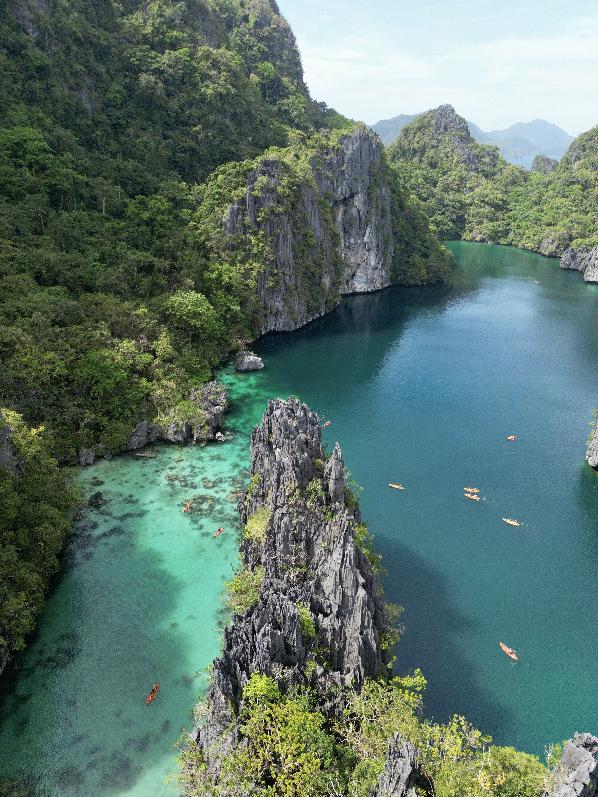
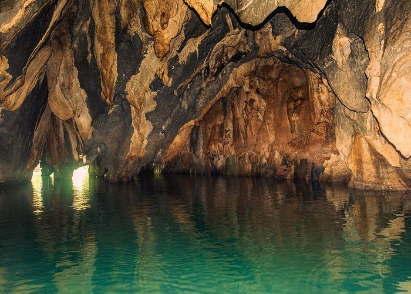
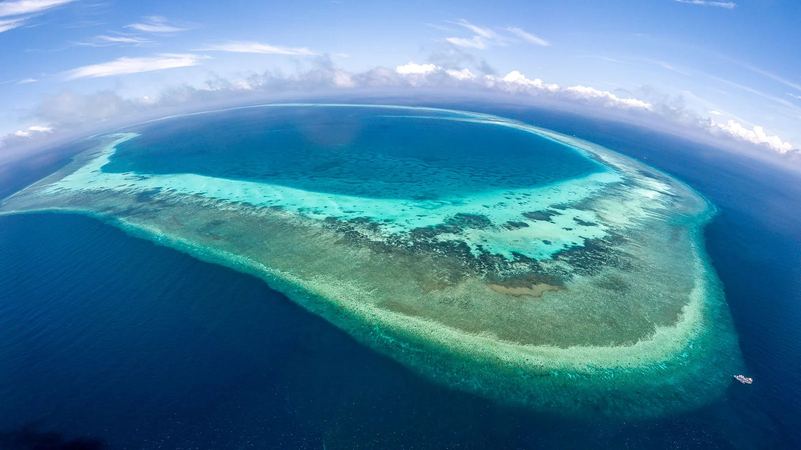

Explore Palawan: Discover the Hidden Paradise of the Philippines
Limestone cliffs, living reefs, and a river that runs through a mountain.
Welcome to Palawan
Palawan stretches across the western edge of the Philippines, a long island province with
turquoise lagoons, jungle-covered mountains, and some of the best diving in Asia. This guide
introduces five places to start with: El Nido, Coron, the Puerto Princesa Underground River,
Honda Bay, and Tubbataha Reefs Natural Park.
About the Place
Palawan is a long, narrow island province in the southwest of the Philippines, with
Puerto Princesa as its capital. It is home to indigenous communities such as the Tagbanua,
Batak, and Palaw'an peoples, who have lived on the land and coasts for generations.
The province is known for protected natural areas, including two UNESCO World Heritage
Sites: the Puerto Princesa Underground River and Tubbataha Reefs Natural Park. Its mix of
limestone karst, rainforest, and clear seas makes it one of the most biologically rich
places in the country.
Attractions
These five destinations show the range of Palawan, from island lagoons to an underground
river and a remote marine park.
El Nido

Limestone cliffs and clear water in Bacuit Bay, El Nido.
El Nido sits on the northern tip of mainland Palawan, facing Bacuit Bay and its dramatic
limestone islands. Boat tours reach hidden spots such as the Big Lagoon, Small Lagoon,
and Secret Lagoon, where visitors can swim and kayak between towering cliffs.
Coron
Kayangan Lake in Coron, one of the cleanest lakes in the Philippines.
Coron is on Busuanga Island and is famous for its lakes, lagoons, and hot springs.
It is also a top wreck-diving site, with Japanese ships sunk during World War II resting
in the bay. Popular stops include Kayangan Lake, Twin Lagoon, and Barracuda Lake.
Puerto Princesa Underground River

The cave entrance of the Puerto Princesa Underground River.
This river flows for several kilometers through a cave system before reaching the sea,
and visitors travel part of it by paddle boat. Inside are large chambers filled with
stalactites and stalagmites. It is a UNESCO World Heritage Site and one of the New7Wonders
of Nature, so permits are required and should be booked ahead.
Honda Bay
A sandbar and shallow water in Honda Bay, near Puerto Princesa.
Honda Bay is a short trip from Puerto Princesa and is the easiest place to try island
hopping in Palawan. Tours stop at islands such as Luli, Starfish, and Pandan, where
visitors snorkel over coral, relax on white sand, and eat a seafood lunch by the beach.
Tubbataha Reefs Natural Park

A diver explores the coral reefs of Tubbataha Reefs Natural Park.
Tubbataha is a remote marine park in the middle of the Sulu Sea, protected as a UNESCO
World Heritage Site. Its reefs shelter sharks, manta rays, turtles, and hundreds of
coral and fish species. It can only be reached by liveaboard dive boat during a short
season each year, from about March to June.
Activities
Island hopping: El Nido, Coron, and Honda Bay all offer boat tours with lagoon and beach stops.
Diving and snorkeling: Wreck dives in Coron and reef dives in Tubbataha.
Kayaking: Paddle through the lagoons of El Nido.
Hiking: Climb viewpoints such as Taraw Cliff in El Nido or the Mt. Tapyas steps in Coron.
Cultural tours: Visit Puerto Princesa's museums and meet local craft makers.
Gallery
A quick look at the five destinations.
Food & Culture
Local food
Palawan's cuisine is built on fresh seafood, grilled fish, and local produce. Visitors
should try Palawan cashew nuts and sweets, and adventurous eaters can taste tamilok, a
local delicacy served with vinegar. Puerto Princesa is also known for crocodile sisig.
Traditions and crafts
Indigenous groups such as the Tagbanua keep traditions in weaving, basketry, and
storytelling alive. Buying handmade crafts directly from local makers supports these
communities.
Travel Guide
How to get there
Fly into Puerto Princesa, El Nido, or Busuanga (for Coron) from Manila or Cebu.
From Puerto Princesa, vans travel to El Nido, and ferries link El Nido and Coron.
Best time to visit
The dry season, roughly from November to May, has the calmest seas and clearest skies.
Travel tips
Book Underground River permits early, bring reef-safe sunscreen, carry cash for small
islands, and follow park rules on environmental fees and trash.
Accommodations
Palawan has lodging for every budget. El Nido and Coron have hostels, guesthouses, and
beachfront resorts, while Puerto Princesa has city hotels close to the airport. Some
islands offer exclusive resorts, and homestays give a closer look at local life.
Events
Puerto Princesa celebrates the Baragatan Festival each June, with street parades,
trade fairs, and displays of products from across the province. In January, the city also
holds Pista y ang Cagueban, a festival of thanksgiving and nature. Check local tourism
offices for the latest schedule before you travel.
Contact
For tour information, permits, and travel questions, reach out to the Palawan tourism
office in Puerto Princesa City, or send an inquiry below.